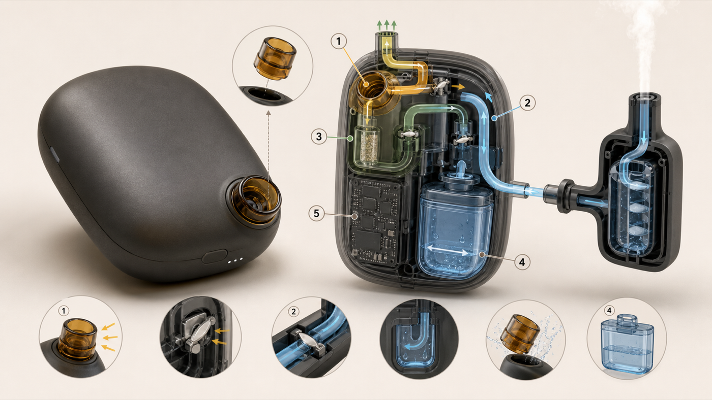

01 · Starting observation
Perceived relief may involve more than the substance.
My own smoking history made me notice that holding an object, taking a pause, coordinating inhalation and exhalation, and watching an exhaled plume disperse could feel important to the ritual. I treated that experience as a source of questions—not evidence about other smokers.
Preserve selected functions. Transform the form. Do not inherit the cigarette's hazards or claims.
The project does not attempt to treat nicotine dependence. It examines sensorimotor, visual, ritual, and contextual components that could inform a safer design exploration.
02 · Literature synthesis
The evidence produced a useful contradiction.
Familiarity may help
Handling and non-nicotine sensorimotor substitutes may matter for some people, particularly when manipulation is part of the smoking routine.
Resemblance may trigger
Visual and multisensory smoking cues can provoke craving. A closer physical copy is not automatically a better substitute.
This tension changed the design goal from reproducing a cigarette to preserving a pause, tactile sequence, agency, and visible completion in a deliberately different form.
03 · Behavioral decomposition
I separated a cigarette into twelve observable functions.
Initiate
Trigger → decide to pause → retrieve
Prepare
Manipulate → initiate → hand to face
Cycle
Inhale → exhale → watch plume
Close
Repeat → end → return
Preserve: pause, manipulation, visible completion, and a clear ending. Remove: tobacco, combustion, nicotine delivery, and inhalation through the object.
04 · Requirements
Evidence and uncertainty became explicit design constraints.
| R1 | No tobacco, combustion, or nicotine delivery |
| R2 | No inhalation through the object; sensing and water paths remain separated |
| R3 | A short cylindrical power grip—not a cigarette silhouette |
| R4 | Exhalation produces immediate and legible visual feedback |
| R5 | Every interaction has a clear beginning, optional cycle, and ending |
| R6 | No claim of validated cessation effectiveness or safety |
| R7 | Leaks, heat, contamination, and misuse default to shutdown |
05 · Concept architecture
Breath, water, and control follow separate pathways.

Breath sensing
User exhalation is detected externally without requiring inhalation through the device.
Visible completion
Light, haptic, or contained visual feedback can mark an ending without grading breathing performance.
Transformed gesture
A microphone-like palm grip creates physical distance from a cigarette silhouette.
06 · Safety and next validation
Safety changes the architecture—not only the disclaimer.
A non-combustion concept is not automatically safe. Water quality, aerosol exposure, microbial growth, cleaning, battery faults, leaks, and conditioned-cue effects all remain relevant. The current work therefore stops before an inhalation or emitting prototype.
Form model
Non-emitting mockup for grip, posture, controls, and misuse.
Benchtop system
Separated flow testing without a user inhaling or emitting material.
Hazard review
Engineering, exposure, hygiene, electrical, and regulatory analysis.
Reviewed research
Only after safety prerequisites, evaluate perception and ritual fit.
Open questions include whether visible feedback produces completion or strengthens smoking cues, whether transformed form remains meaningful, and whether a portable closed architecture is technically feasible.